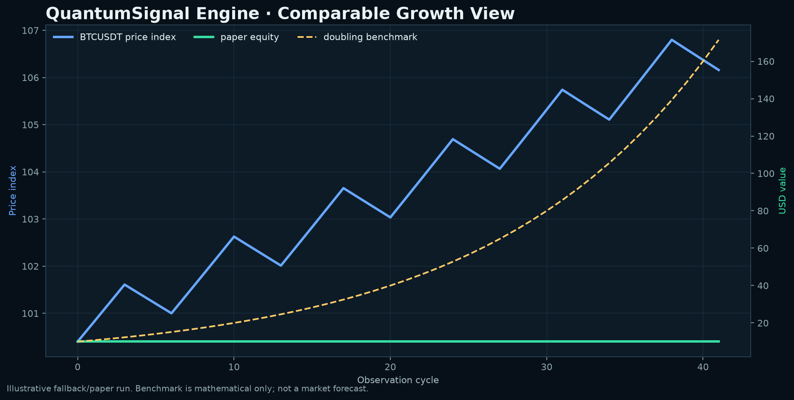
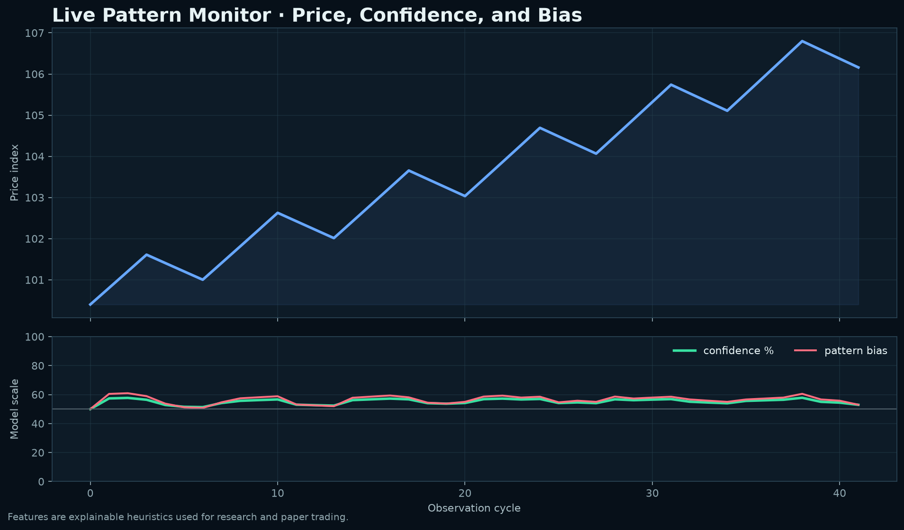

01 / OBSERVE
Production market data
Binance and Coinbase WebSocket adapters stream public market observations with explicit source labels and safe fallbacks.
QuantumSignal Engine is a local-first market intelligence and paper-trading workspace for watching price structure, testing hypotheses, and learning from the result without pretending that a model can guarantee the future.
Before downloading anything, step through the core loop. Click each stage to see what the local dashboard does, what you can inspect, and where the safety boundary sits.
The dashboard connects to public market data, labels the venue, and shows price movement before it creates any trading proposal.
Every layer has a visible boundary: collect observations, extract structure, generate a proposal, test it against history, and keep execution behind a hard lock.
Binance and Coinbase WebSocket adapters stream public market observations with explicit source labels and safe fallbacks.
Heuristic pattern extraction, Graphify context, and TradingAgents research boundaries make the reasoning inspectable rather than magical.
Fees, slippage, drawdown, equity curves, and CSV reports turn an attractive chart into a measurable experiment.
Signals become paper proposals first. The dashboard shows decisions, profit data, and the next action without placing exchange orders.
A separate gate requires explicit confirmation, while this build keeps live_orders_allowed hard-disabled.
Use the results to refine parameters and gather more observations—not to infer a guaranteed doubling path.
Compare growth hypotheses, pattern monitoring, and FOMO context in one calm workspace. The visuals are there to support judgment, not manufacture certainty.

The engine exposes a compact signal object with signal, confidence, expected return, whale activity, news sentiment, and next action. Every value remains a research estimate.

QuantumSignal Engine is designed for local research and paper trading. Adding API credentials or confirming the live gate does not activate a real executor in this build. Withdrawals are not supported, private keys are never requested, and wallet flows remain user-signed.
That boundary is intentional: analysis → proposal → approval → execution. The last step is not silently implied by the first three.
Clone the repository, install the package, and open the local UI. This GitHub Pages site is the public showcase; the Python/WebSocket dashboard is the working local demo.